5 Analisi delle Componenti Principali
L’Analisi delle Componenti Principali (PCA, Principal Component Analysis) è una tecnica di riduzione della dimensionalità che trasforma \(p\) variabili correlate in un numero più piccolo di componenti non correlate, ordinate per varianza spiegata. Nelle ricerche di mercato è lo strumento di riferimento per mappe di posizionamento e per costruire indicatori sintetici a partire da batterie di item correlati.
5.1 Definizione e obiettivi
La PCA ha quattro obiettivi tipici:
- Riduzione della dimensionalità — riassumere molte variabili in poche componenti, perdendo il meno possibile dell’informazione. Per la PCA l’informazione è la variabilità dei dati: ogni componente ne spiega una quota, la prima la più grande, e si tengono solo le prime, che insieme ne spiegano la parte principale. Una lunga batteria di item di un questionario si riassume spesso in poche componenti, più facili da leggere e da presentare, che possono servire come indicatori sintetici o come base per analisi successive, per esempio una cluster analysis. Nel progetto d’esempio (§ P-26) nove variabili diventano due componenti che conservano il 61,5% della variabilità totale. Il prezzo è la variabilità scartata: quante componenti tenere è una scelta, discussa nella Sezione 5.6.
- Individuazione della struttura nascosta — capire quali variabili si muovono insieme e quali dimensioni stanno dietro a questi legami. La struttura è «nascosta» perché nessuna variabile del dataset la misura direttamente: emerge solo da come le variabili variano insieme. In un questionario di soddisfazione, per esempio, le risposte sulla qualità del prodotto (
qualita), sulla sua affidabilità (affidabile) e sulla sua innovatività (innovativa) tendono a salire e scendere insieme, e lo stesso fanno quelle sulla fedeltà alla marca (fedele), sul passaparola (raccomando) e sull’intenzione di riacquisto (riacquisto). Dietro ai sei item ci sono quindi due dimensioni, la qualità percepita e la fedeltà, che nessuna domanda chiede in modo esplicito. La PCA le fa emergere: le componenti riassumono i gruppi di item che vanno insieme e, spesso dopo una rotazione, ciascuna si lega soprattutto a un gruppo e prende il nome del concetto che rappresenta (l’esempio è ripreso nella sezione sulle rotazioni). Le componenti restano però una descrizione di come le variabili osservate variano insieme, non un modello di variabili latenti come nell’analisi fattoriale. - Eliminazione della multicollinearità — quando le variabili esplicative di una regressione sono molto correlate fra loro (multicollinearità), i coefficienti diventano instabili e difficili da interpretare: il modello non riesce a separare l’effetto di variabili che si muovono insieme, e piccoli cambiamenti nei dati possono cambiarli molto. Succede spesso con i giudizi su più attributi di un prodotto, che tendono a essere correlati. Le componenti non ruotate sono invece incorrelate fra loro per costruzione: usarle come variabili esplicative al posto delle variabili originali elimina il problema. In cambio i coefficienti si riferiscono alle componenti, e vanno interpretati attraverso di esse. La proprietà vale solo senza rotazione: le coordinate sulle componenti ruotate in generale sono correlate (Sezione 5.7.6.4).
- Visualizzazione dei dati — con più di tre variabili la nuvola dei dati non si può disegnare. Il piano delle prime due componenti è quello che conserva più variabilità di qualunque altro piano, cioè la fotografia in due dimensioni che, in media, deforma meno le distanze fra le unità. Su questo piano le unità (clienti, marche, prodotti) diventano punti, vicini fra loro se hanno profili simili, e le variabili diventano frecce che indicano in quale direzione crescono: insieme formano la mappa di posizionamento (Sezione 5.9). La quota di variabilità spiegata dalle due componenti dice quanto la fotografia è fedele nel complesso; i coseni quadrati (cos²) dicono quanto lo è per ogni singolo punto (Sezione 5.4).
5.2 L’idea geometrica
Date \(n\) osservazioni in \(\mathbb{R}^p\), la PCA trova un nuovo sistema di assi ortogonali:
- PC1, la prima componente principale (PC): direzione di massima varianza dei dati.
- PC2, la seconda: ortogonale a PC1, varianza massima fra le rimanenti.
- …e così via fino a PC\(_p\).
La Figura 5.1 mostra l’idea con due sole variabili.
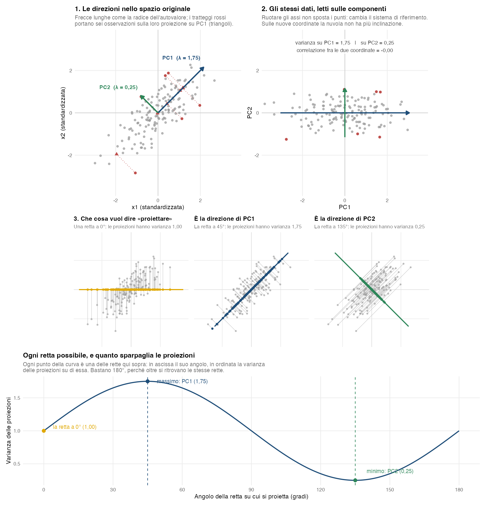
Nel pannello 1, PC1 è la direzione lungo cui i dati si allungano di più e PC2 le è perpendicolare; le frecce hanno lunghezza proporzionale alla radice dell’autovalore, cioè alla deviazione standard delle proiezioni. I tratteggi rossi portano sei osservazioni sulla loro proiezione su PC1: è quel valore proiettato a diventare la coordinata dell’osservazione sulla componente. Nel pannello 2 gli stessi punti sono letti sulle nuove coordinate: la rotazione non sposta nulla, cambia il sistema di riferimento, e la nuvola perde l’inclinazione perché le due coordinate sono incorrelate.
Il pannello 3 spiega perché proprio quelle direzioni. Ogni retta passante per l’origine è individuata dal proprio angolo, e su ciascuna si possono proiettare tutti i punti: i tre riquadri centrali mostrano altrettanti esempi, con i punti in grigio, la retta in colore e sopra di essa le proiezioni. Cambiando retta cambia quanto le proiezioni risultano sparse, cioè la loro varianza: a 0° vale 1,00, a 45° sale a 1,75, a 135° scende a 0,25. La curva in basso raccoglie questo calcolo per tutte le rette, un angolo alla volta, e si ferma a 180° perché da lì in poi si ritroverebbero le stesse rette già considerate.
PC1 è la direzione in cui la curva raggiunge il massimo; PC2 è la perpendicolare a PC1 — in due dimensioni è l’unica direzione disponibile dopo la prima — e cade dove la curva raggiunge il minimo. Non è un caso: le varianze delle proiezioni su due rette perpendicolari sommano sempre alla varianza totale, qui 2 (1,00 + 1,00 a 0° e 90°, 1,75 + 0,25 a 45° e 135°), quindi dove una è massima l’altra è minima. Con più di due variabili PC2 è invece la direzione di varianza massima fra quelle perpendicolari a PC1, e il minimo spetta all’ultima componente.
5.2.1 Pesi, autovalori e loadings
Ogni componente si calcola, unità per unità, con questa formula:
\[ \text{PC}_k = v_{1k} x_1 + v_{2k} x_2 + \ldots + v_{pk} x_p \]
Come si legge.
- \(k\) indica la componente (PC1, PC2, …) e \(j\) la variabile, da 1 a \(p\).
- \(x_1, x_2, \ldots, x_p\) sono i valori delle \(p\) variabili per una certa unità, per esempio le risposte di un rispondente. Sono espressi come scarti dalla media e, se si standardizza, divisi per la deviazione standard: un valore positivo vuol dire sopra la media, uno negativo sotto.
- \(v_{1k}, v_{2k}, \ldots, v_{pk}\) sono i pesi della componente \(k\), uno per variabile. Sono gli stessi per tutte le unità: per ogni componente c’è una sola “ricetta”.
- \(\text{PC}_k\) è il risultato: il punteggio dell’unità sulla componente, cioè la sua coordinata. È un numero diverso per ogni unità.
In parole: si moltiplica ogni valore per il peso della sua variabile e si sommano i prodotti. Una somma di questo tipo si chiama combinazione lineare.
L’idea: una retta che raccoglie più variabilità possibile. Ogni rispondente si può pensare come un punto: con due variabili è un punto del piano, come nella Figura 5.1; con sei variabili è un punto in uno spazio a sei dimensioni, che non si può disegnare ma funziona allo stesso modo. La PCA costruisce le componenti come rette che passano per il centro della nuvola, cioè per il rispondente «medio»:
- PC1. Si fa ruotare una retta attorno al centro e la si ferma nella direzione lungo cui i punti, proiettati sulla retta, sono più sparsi (pannello 3 della Figura 5.1). È la direzione in cui i rispondenti differiscono di più, quindi quella che da sola raccoglie più informazione: per la PCA l’informazione è la variabilità (Sezione 5.1, punto 1).
- PC2. Fra le rette perpendicolari a PC1 si sceglie di nuovo quella lungo cui i punti sono più sparsi. Essere perpendicolare a PC1 vuol dire raccontare qualcosa che PC1 non ha già raccolto.
- Le componenti successive. Ogni nuova retta è perpendicolare a tutte le precedenti e raccoglie la variabilità che resta, sempre meno. Con \(p\) variabili si arriva a \(p\) componenti, che insieme raccolgono tutta la variabilità; di solito ne bastano poche.
Visti così, i termini tecnici diventano semplici:
| Termine | Che cos’è sulla retta | Che cosa dice |
|---|---|---|
| Punteggio | La coordinata del rispondente sulla retta, cioè il punto in cui cade la sua proiezione | Dove si colloca il rispondente su quella dimensione: lo zero è il centro, i valori positivi e negativi stanno ai due lati |
| Autovettore (i pesi) | La direzione della retta: un numero per variabile, che dice quanto la retta avanza lungo l’asse di quella variabile (vedi sotto) | Quali variabili la componente mette insieme, e in che verso: una variabile con peso grande conta molto, una con peso vicino a 0 quasi per niente |
| Autovalore | Quanto sono sparsi i punti lungo la retta, cioè la varianza dei punteggi | Quanta informazione raccoglie la componente; divisa per la variabilità totale, dà la quota di varianza spiegata |
La formula con i pesi, all’inizio della sezione, è solo il modo di calcolare la coordinata di ogni rispondente: lo fa il programma.
Perché i pesi dicono la direzione. Si prende sulla retta un tratto lungo 1, a partire dal centro, e lo si proietta ad angolo retto sull’asse di ciascuna variabile (Figura 5.2). La lunghezza di ogni proiezione è il peso di quella variabile; in geometria corrisponde al coseno dell’angolo fra la retta e l’asse. Una retta in diagonale, a 45° da entrambi gli assi, ha due proiezioni uguali, 0,71: le due variabili pesano allo stesso modo. Una retta più vicina all’asse di una variabile ha su quell’asse una proiezione più lunga, cioè un peso più grande. Una retta che corre lungo un asse ha peso 1 su quella variabile e 0 sull’altra. Per il teorema di Pitagora, infine, i quadrati delle due proiezioni di un tratto lungo 1 sommano sempre a 1: è per questo che i quadrati dei pesi sommano a 1. In termini interpretativi, una componente orientata quasi lungo l’asse di una variabile racconta soprattutto quella variabile; una a metà strada fra due assi le mette insieme in parti uguali.
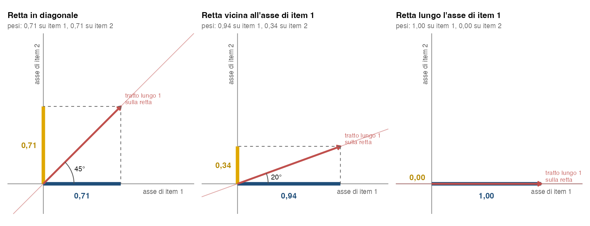
Perché contano le correlazioni. Quanta informazione può raccogliere una sola retta dipende dalla forma della nuvola (Figura 5.3). Con variabili standardizzate, che hanno tutte varianza 1, la forma dipende solo dalle correlazioni. Se due variabili standardizzate sono incorrelate la nuvola è rotonda: nessuna direzione è migliore delle altre, e una retta raccoglie solo metà dell’informazione, quanto una variabile presa da sola. Se sono correlate la nuvola è allungata, e una retta orientata lungo l’allungamento ne raccoglie di più: il 75% con correlazione 0,5. Se sono perfettamente correlate i punti stanno su una retta, e una componente le riassume del tutto. Senza standardizzazione conta anche quanto varia ciascuna variabile: una variabile con varianza molto più grande delle altre allunga la nuvola nella propria direzione anche se è incorrelata con le altre, e la prima componente racconta soprattutto lei. In termini interpretativi: riassumere più item in un solo numero funziona bene solo se quegli item raccontano più o meno la stessa cosa dei rispondenti.
Nel questionario di soddisfazione, con gli item standardizzati, qualita e affidabile (correlazione 0,90) dicono quasi la stessa cosa: un indice che le riassume ne conserva il 95% dell’informazione. qualita e riacquisto (correlazione 0,39) raccontano invece cose in parte diverse: un indice unico ne conserva il 70%, e chi giudica bene la qualità ma non pensa di riacquistare avrebbe lo stesso punteggio di chi ha l’atteggiamento opposto. Andrebbe persa proprio la differenza che interessa a un’impresa, quella fra chi apprezza il prodotto e chi gli resta fedele.
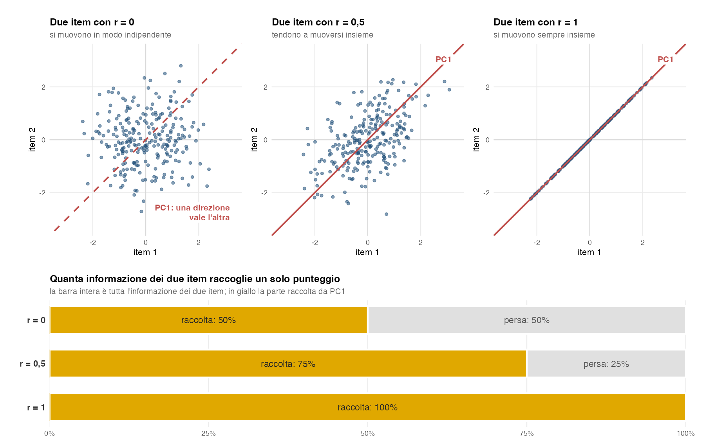
Nel questionario di soddisfazione. La Figura 5.4 applica queste idee ai sei item del questionario, qualita, affidabile e innovativa per la qualità percepita e fedele, raccomando e riacquisto per la fedeltà, con una PCA su variabili standardizzate e 250 rispondenti simulati (sono gli stessi dati della Figura 5.11).
- Le direzioni (pannello A). I pesi di PC1 sono tutti positivi e quasi uguali: la retta va nella direzione in cui crescono tutti gli item insieme, quindi PC1 misura la soddisfazione generale. I pesi di PC2 sono positivi sulla qualità e negativi sulla fedeltà: la retta contrappone chi apprezza il prodotto più di quanto gli resti fedele a chi fa il contrario. Il segno indica solo il verso della retta, che è arbitrario: programmi diversi possono restituirlo invertito, e nella Figura 5.11 PC2 ha proprio il verso opposto.
- L’informazione raccolta (pannello B). Ogni item standardizzato porta una varianza pari a 1, quindi la variabilità totale è 6. PC1 ne raccoglie 4,05, cioè il 67,6%; PC2 ne raccoglie 1,47, il 24,6%; le altre quattro quasi niente. Due rette bastano a raccontare il 92% delle differenze fra i rispondenti. La linea tratteggiata a 1 è quanto porta una sola variabile: PC1 e PC2 la superano, ed è il criterio di Kaiser (Sezione 5.6).
- I loadings (pannello C). Con item standardizzati, come qui, sono le correlazioni fra ogni item e ogni componente: dicono quanto l’item va d’accordo con la dimensione individuata dalla retta, su una scala da −1 a 1 comune a tutte le componenti. Si ottengono dai pesi moltiplicandoli per la radice dell’autovalore, quindi hanno la stessa forma, ma si possono confrontare anche fra componenti diverse.
qualita, per esempio, ha correlazione 0,83 con PC1 e 0,50 con PC2. - Il cerchio delle correlazioni (pannello D). I loadings sono le coordinate delle frecce: ogni item è disegnato nel piano delle prime due componenti. Le tre frecce di ciascun gruppo quasi coincidono, perché i tre item dicono quasi la stessa cosa, e arrivano quasi fino al cerchio, perché le due componenti ne raccolgono più del 90% della variabilità.
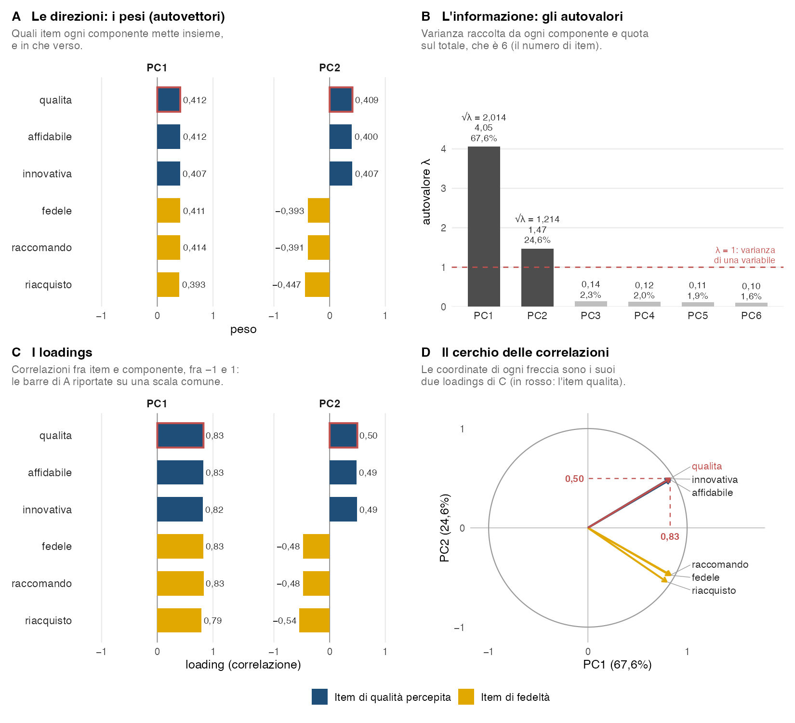
qualita. A. I pesi di PC1 e PC2. B. Gli autovalori, con la quota sul totale. C. I loadings. D. Il cerchio delle correlazioni, che ha per coordinate i loadings di C.
Attenzione ai nomi: in alcuni programmi e manuali la parola loadings indica i pesi. In R, per esempio, princomp() chiama loadings i pesi e prcomp() li chiama rotation. Nel resto del capitolo \(v_{jk}\) indica sempre i pesi e \(\ell_{jk}\) i loadings: con variabili standardizzate sono la correlazione fra la variabile \(j\) e la componente \(k\), senza standardizzazione quella correlazione moltiplicata per la deviazione standard della variabile (Sezione 5.4).
5.3 Standardizzazione
La PCA è sensibile alle scale delle variabili. La scelta di standardizzare o meno dipende dalla natura dei dati.
5.3.1 Standardizzazione raccomandata
- Unità di misura diverse: standardizzare porta tutte le variabili a varianza 1, così nessuna pesa di più solo per l’unità di misura in cui è espressa. Non rende però uguali i contributi alle componenti, che dipendono dalle correlazioni.
- Varianze molto diverse per ragioni di scala: se una variabile varia di più solo perché è misurata su una scala più ampia (per esempio un item da 1 a 10 accanto a uno da 1 a 5), senza standardizzazione domina le componenti senza un motivo sostanziale.
- Interpretazione semplificata: i loadings sono nella stessa scala e comparabili.
5.3.2 Standardizzazione non necessaria
- Tutte le variabili su scala simile e con la stessa unità di misura.
- Stessa unità di misura e differenze di varianza che hanno un significato: se le variabili sono misurate allo stesso modo e alcune variano più di altre per ragioni sostanziali, quella differenza è informazione, e standardizzare la cancellerebbe dando a tutte lo stesso peso. Per esempio, con la spesa mensile in euro in cinque categorie di prodotto, le categorie in cui i clienti spendono in modo molto diverso distinguono i clienti più di quelle in cui spendono tutti più o meno lo stesso, ed è giusto che pesino di più. In questo caso conviene la PCA sulle variabili non standardizzate.
In pratica, nell’analisi di mercato, standardizzare è molto spesso (anche se non sempre) la scelta giusta (item Likert e variabili demografiche hanno scale incomparabili).
5.4 Interpretazione: coordinate, contributi, coseni quadrati
La PCA produce tre misure su ogni componente, sia per le variabili sia per le osservazioni. Le formule non sono le stesse, e tenerle distinte evita gran parte dei malintesi.
5.4.1 Variabili
- Loading (coordinata della variabile): \(\ell_{jk} = \sqrt{\lambda_k}\, v_{jk}\), cioè il peso della variabile, l’elemento dell’autovettore, moltiplicato per la radice dell’autovalore della componente. Con variabili standardizzate è la correlazione fra la variabile e la componente, \(\operatorname{cor}(X_j, \text{PC}_k)\), e sta fra −1 e 1. Senza standardizzazione è quella correlazione moltiplicata per la deviazione standard della variabile, \(\sigma_j\): è espresso nell’unità di misura della variabile e non è più limitato a \([-1, 1]\). Il segno indica la direzione della relazione.
- Coseno quadrato (cos²) della variabile:
\[ \cos^2_{jk} = \frac{\ell_{jk}^2}{\sigma_j^2} = \operatorname{cor}(X_j, \text{PC}_k)^2 \]
cioè la quota dell’informazione della variabile, la sua varianza \(\sigma_j^2\), che la componente \(k\) raccoglie. Sommato su tutte le componenti vale 1: ogni variabile ripartisce la sua informazione fra le componenti. Con variabili standardizzate \(\sigma_j^2 = 1\) e il cos² è semplicemente \(\ell_{jk}^2\). Su un piano formato da due componenti la qualità complessiva di rappresentazione è la somma dei due cos². Nel questionario di soddisfazione, per esempio, qualita ha loading 0,83 su PC1 e 0,50 su PC2: PC1 ne raccoglie il 69% dell’informazione, PC2 il 25%, il piano delle due il 93%.
- Contributo della variabile alla componente:
\[ \text{ctr}_{jk}(\%) = 100\,\frac{\ell_{jk}^2}{\lambda_k} = 100\, v_{jk}^2 \]
cioè la quota di \(\lambda_k\) dovuta alla variabile \(j\), espressa in percentuale come nelle tabelle del modulo. I contributi a una componente sommano a 100 perché i quadrati dei suoi loadings sommano al suo autovalore: l’autovalore è l’informazione raccolta dalla componente, e ogni variabile ne porta una parte, \(\ell_{jk}^2\). Dividendo ciascuna parte per il totale \(\lambda_k\) si ottengono quote che sommano a 1, cioè a 100 in percentuale. Lo stesso si vede dai pesi: il contributo è \(100\, v_{jk}^2\), e i quadrati dei pesi sommano a 1 (Figura 5.2). La stessa quantità \(\ell_{jk}^2\) si legge quindi in due modi: divisa per l’informazione della variabile dà il cos², divisa per quella della componente dà il contributo. In termini interpretativi, l’autovalore è la torta dell’informazione raccolta dalla componente, e i contributi dicono come se la dividono le variabili. Nel questionario di soddisfazione, per esempio, i sei item si dividono quasi in parti uguali l’informazione di PC1, fra il 15,5% e il 17,2% ciascuno. Contributi alti individuano le variabili che guidano la componente: sono quelle che le danno il nome.
5.4.2 Osservazioni
Indichiamo con \(f_{ik}\) la coordinata dell’osservazione \(i\) sulla componente \(k\).
- Contributo dell’osservazione (con pesi uguali fra le osservazioni, la convenzione usata dal modulo):
\[ \text{ctr}_{ik}(\%) = 100\,\frac{f_{ik}^2}{\sum_h f_{hk}^2} \]
- Coseno quadrato dell’osservazione:
\[ \cos^2_{ik} = \frac{f_{ik}^2}{d_i^2} \]
dove \(d_i^2\) è la distanza quadratica dell’osservazione dall’origine nello spazio della PCA.
Uso operativo. Variabili od osservazioni con cos² basso sono mal rappresentate nel piano scelto: la loro posizione nel biplot non è informativa.
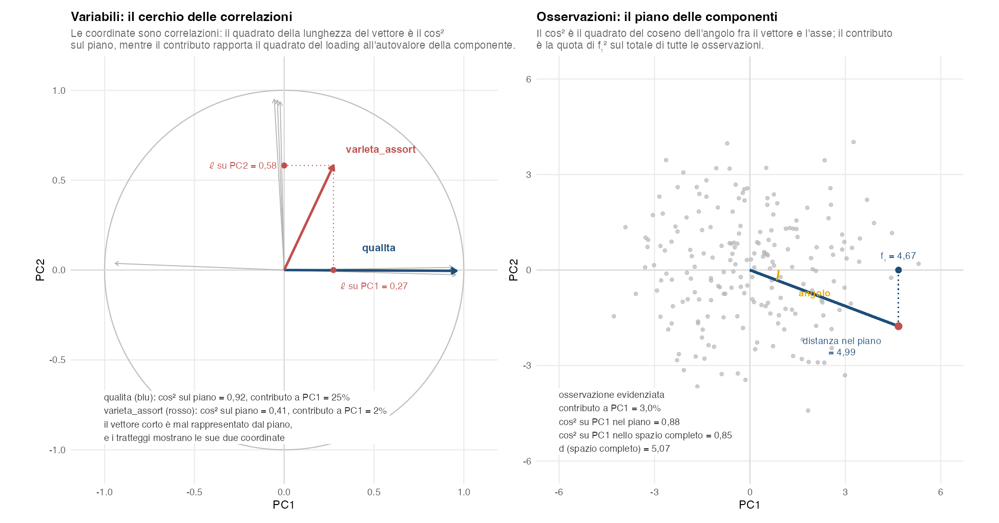
qualita in blu e varieta_assort in rosso. A destra, le osservazioni nel piano delle componenti, con un’osservazione evidenziata, il suo angolo con PC1 e la sua distanza dall’origine.
Nella Figura 5.5, a sinistra, le coordinate sul cerchio sono correlazioni, e il quadrato della lunghezza del vettore è il cos² sul piano. qualita è quasi tutta rappresentata dal piano; varieta_assort ha un vettore corto — è mal rappresentata — e i tratteggi mostrano le sue due coordinate, cioè le sue correlazioni con PC1 e PC2, che qui coincidono con i suoi loadings perché le variabili sono standardizzate. Il contributo è un’altra cosa ancora: rapporta il quadrato del loading all’autovalore della componente. A destra, il cos² su PC1 è il quadrato del coseno dell’angolo fra il vettore che va dall’origine al punto e l’asse; il contributo è invece la quota che quel punto ha sulla somma dei quadrati delle coordinate di tutte le osservazioni. Si noti anche la differenza fra il cos² calcolato nel piano e quello sullo spazio completo: il segmento disegnato è lungo 4,99 (distanza nel piano), mentre la distanza \(d = 5{,}07\) comprende anche le componenti che non stiamo guardando.
5.4.3 Relazioni fra le tre misure
| Misura | Risponde a | Uso tipico |
|---|---|---|
| Loading / coordinata | Quanto e in che verso la variabile è legata alla PC? Con variabili standardizzate è la loro correlazione | Lettura della tabella dei loadings e, con variabili standardizzate, del cerchio delle correlazioni |
| Contributo | Quanto quella variabile (o osservazione) partecipa alla costruzione della PC? | Naming della componente |
| cos² | Quanto la PC (o il piano) rappresenta quella variabile o osservazione? | Affidabilità della posizione nel biplot |
- Il contributo dice quanto una variabile o un’osservazione partecipa alla costruzione della componente.
- Il cos² dice quanto bene quella variabile o osservazione è rappresentata dalla componente o dal piano scelto.
Un contributo elevato non implica automaticamente un cos² elevato, e viceversa: un’osservazione lontanissima dall’origine lungo PC1 può avere contributo altissimo su PC1 e cos² modesto, se gran parte della sua distanza dall’origine vive su componenti che non stiamo guardando.
5.5 Il cerchio delle correlazioni
Strumento grafico che rappresenta le variabili attive come vettori nel piano (PC\(x\), PC\(y\)).
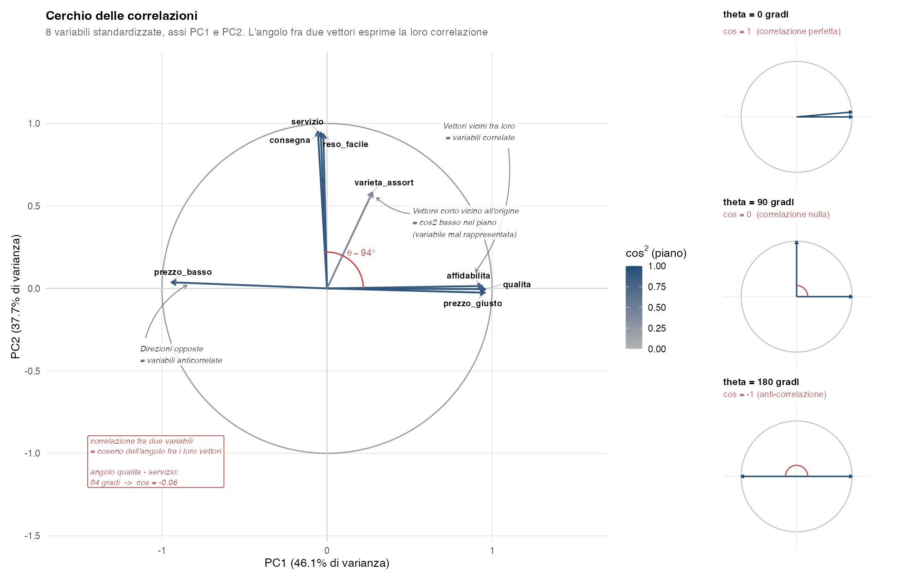
varieta_assort è invece “mal rappresentato” perché la sua varianza vive in larga parte su componenti successive.
5.5.1 Struttura
- Posizione delle variabili: vettori che partono dall’origine.
- Direzione del vettore: relazione della variabile con le due componenti del piano.
- Lunghezza del vettore: il suo quadrato è la qualità di rappresentazione della variabile sul piano, \(r_{j1}^2 + r_{j2}^2 = \cos^2_{j,\text{piano}}\), quindi la lunghezza è \(\sqrt{\cos^2_{j,\text{piano}}}\), dove \(r_{j1} = \operatorname{cor}(X_j, \text{PC}_1)\) e \(r_{j2} = \operatorname{cor}(X_j, \text{PC}_2)\) sono le coordinate del vettore nel cerchio, cioè le correlazioni della variabile con le due componenti. Con variabili standardizzate coincidono con i loadings \(\ell_{j1}\) e \(\ell_{j2}\).
- Cerchio unitario: confine teorico dei loadings su matrice di correlazione.
5.5.2 Interpretazione
- Vettori vicini all’origine: bassa correlazione con le PC del piano → variabile meno importante in quel piano (anche se può essere ben rappresentata su PC successive).
- Vettori lontani dall’origine: variabili ben rappresentate sul piano, perché una quota elevata della loro variabilità è catturata dalle componenti visualizzate. Attenzione a non leggerlo come «importante in assoluto»: per capire quanto una variabile pesa nella costruzione della componente servono i contributi.
- Angoli fra vettori, quando entrambe le variabili sono ben rappresentate sul piano: angolo piccolo → forte correlazione positiva; circa 90° → correlazione lineare prossima a zero; circa 180° → forte correlazione negativa. Correlazione nulla non significa indipendenza statistica, e l’interpretazione dell’angolo è affidabile solo se il cos² di entrambe le variabili sul piano è alto.
- Angoli fra vettore e asse: piccolo → forte correlazione con quella PC.
5.5.3 Standardizzazione e lunghezza apparente dei vettori
Se le variabili sono standardizzate, la loro lunghezza “vera” è esattamente 1: ogni variabile vive sulla “sfera unitaria” dello spazio \(p\)-dimensionale delle componenti, perché la somma dei suoi cos² su tutte le componenti è sempre 1.
Quando però disegniamo il cerchio delle correlazioni, vediamo solo la proiezione sul piano (PC1, PC2). La lunghezza apparente del vettore è \(\sqrt{\cos^2_{\text{PC1}} + \cos^2_{\text{PC2}}}\), cioè la radice quadrata della varianza spiegata dalle prime due componenti per quella variabile.
Una variabile che sembra “corta” nel cerchio non è meno importante in assoluto: significa solo che gran parte della sua varianza vive su PC3, PC4, … che non vediamo.
La figura sotto rende esplicito il concetto. Per ciascuna delle tre variabili la somma dei cos² su tutte le otto componenti è 1 (vale per ogni variabile, standardizzata o no); la figura mostra le prime quattro. Ma solo le prime due barre (PC1 e PC2, in blu) contribuiscono alla lunghezza visibile nel cerchio. La variabile varieta_assort è un caso tipico: cos² combinato su PC1+PC2 è solo 0,41 → vettore corto, anche se la variabile ha lunghezza totale 1 nello spazio completo.
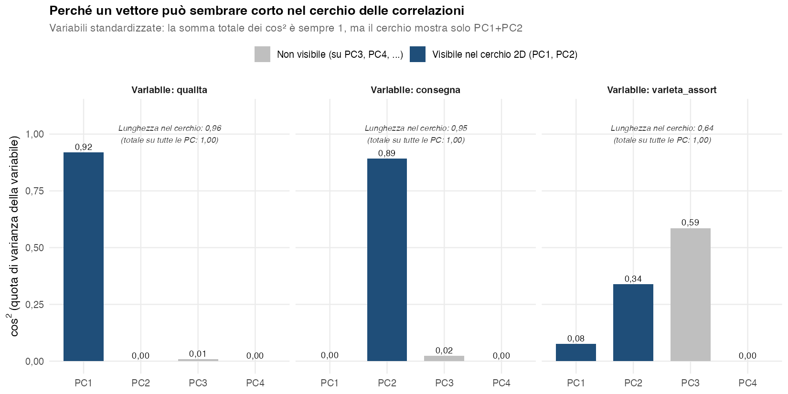
5.5.4 Esempio di lettura
Se sul cerchio (PC1, PC2):
- PC1 ha correlazioni positive alte con
qualita_prima_di_prezzo,marca_conta_moltoepreferisco_negozio_fisicoe negativa conconsegna_a_casa_essenziale→ PC1 oppone “tradizione/qualità” a “comodità/convenienza”. - PC2 ha la correlazione più alta con
compro_online_spesso→ PC2 è una dimensione secondaria di “propensione all’acquisto online”.
5.6 La scelta del numero di componenti
Tre criteri convergenti aiutano a decidere quante componenti tenere.
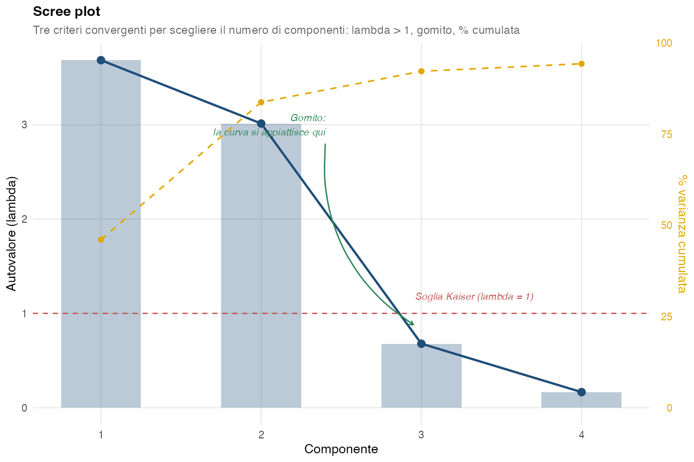
5.6.1 1. Varianza spiegata
Selezionare \(q\) componenti tali che la varianza spiegata cumulata raggiunga un valore desiderato. Soglie tipiche:
- 70–80% per analisi esplorativa.
- 90–95% per riduzione di dimensionalità conservativa.
5.6.2 2. Criterio dell’elbow (gomito)
Esaminare lo scree plot (autovalori in ordine decrescente) e cercare il punto in cui la curva mostra un “gomito” o una diminuzione netta di pendenza. Quel punto indica dove l’aggiunta di ulteriori componenti apporta benefici marginali.
5.6.3 3. Criterio di Kaiser
Vale solo con variabili standardizzate (PCA sulla matrice di correlazione, l’impostazione predefinita del modulo): si tengono le componenti con autovalore \(\lambda > 1\). Ogni variabile porta una varianza pari a 1 e \(\sum \lambda_k = p\), quindi \(\lambda > 1\) significa “spiega più di una variabile originale”. Senza standardizzazione gli autovalori dipendono dalle unità di misura delle variabili e la soglia 1 non ha significato: per questo il modulo, con Standardizza = No, non disegna la linea a \(\lambda = 1\) nello scree plot, e restano i primi due criteri.
Nessun criterio è infallibile. La pratica è confrontare i criteri (il terzo solo con variabili standardizzate) + l’interpretabilità delle componenti, e scegliere il numero che dà componenti leggibili e didatticamente sostenibili. In analisi di mercato si tiene tipicamente \(q = 2\) o \(q = 3\) per produrre mappe 2D/3D leggibili.
5.7 Rotazioni: Varimax e Promax
Le rotazioni si applicano dopo aver scelto quante componenti tenere, e servono a rendere più leggibile quel sottospazio.
Esempi, figure e valori di questa sezione vengono da PCA su variabili standardizzate: i loadings sono quindi correlazioni fra −1 e 1, e un loading «grande» è vicino a ±1. Senza standardizzazione le rotazioni seguono la stessa logica, ma i loadings sono nell’unità di misura delle variabili e non sono più limitati a ±1 (Sezione 5.4).
Con una rotazione ortogonale come Varimax il sottospazio resta lo stesso e la varianza complessivamente associata agli assi ruotati non cambia: viene solo ridistribuita fra di essi. Con una rotazione obliqua come Promax le componenti risultanti sono correlate, e la decomposizione della varianza non si legge più in modo additivo come per le componenti principali ortogonali: le quote si sovrappongono.
5.7.1 Perché ruotare
Senza rotazione, la PCA tende a concentrare molta varianza su PC1, con molte variabili che caricano un po’ su tutte le componenti. Risultato: componenti “sporche”, difficili da etichettare.
L’obiettivo della rotazione è raggiungere la simple structure (Kaiser 1958).
5.7.2 Cos’è la simple structure
Il concetto è dovuto a L.L. Thurstone (1947): un criterio di interpretabilità della matrice dei loadings. In termini operativi:
Una matrice di loadings presenta una simple structure quando ogni variabile ha loading relativamente elevati su poche componenti — idealmente una sola — e loading piccoli sulle altre. L’obiettivo non è arrivare a valori esattamente \(\pm 1\) e \(0\), ma a una struttura abbastanza sparsa e interpretabile, con cross-loading limitati.
Equivalentemente, la matrice è sparsa e i loadings tendono a essere più polarizzati: valori relativamente grandi su poche componenti e piccoli sulle altre, con pochi valori intermedi.
Perché è desiderabile. Quando i loadings sono in simple structure, ogni componente è facile da nominare: la si descrive con le poche variabili che caricano forte su di essa. Se invece i loadings sono “sparpagliati” (valori intermedi su tutte le componenti), nominarla diventa quasi impossibile — la componente diventa “un po’ di tutto, niente in particolare”.
Esempio concreto con 4 item Likert su qualità del servizio:
| Variabile | Senza simple structure | Con simple structure |
|---|---|---|
cortesia |
(0,72, 0,55) | (0,90, -0,05) |
tempi |
(0,68, 0,60) | (0,91, 0,02) |
pulizia |
(-0,55, 0,72) | (0,05, 0,90) |
comfort |
(-0,60, 0,68) | (-0,02, 0,91) |
A sinistra, che nome dareste a PC1? “Qualità e pulizia un po’ opposte”… incomprensibile. A destra: PC1 = “qualità del personale”, PC2 = “qualità dell’ambiente”. Pulito.
I criteri originali di Thurstone (Thurstone 1947). Per una matrice di loadings con \(p\) variabili e \(q\) fattori, simple structure significa:
- Ogni variabile ha almeno un loading prossimo a zero su qualche fattore.
- Per ogni fattore, hanno loading prossimo a zero almeno tante variabili quanti sono i fattori, cioè almeno \(q\): la coincidenza del simbolo non è un refuso, il criterio di Thurstone lega davvero il numero minimo di zeri per colonna al numero di fattori estratti.
- Per ogni coppia di fattori, alcune variabili caricano sull’uno e zero sull’altro (e viceversa).
- Se \(q \geq 4\), per ogni coppia di fattori la maggior parte delle variabili ha loading zero su entrambi.
- Per ogni coppia di fattori, poche variabili hanno loading non-zero su entrambi.
Tutti questi criteri puntano nella stessa direzione: matrice sparsa, ogni variabile “etichetta” una sola componente.
Misura quantitativa: come la quantificano gli algoritmi. Varimax non opera direttamente sui 5 criteri di Thurstone, ma su una misura scalare che li approssima — la varianza dei loadings al quadrato:
\[ V = \sum_{k=1}^{q} \text{Var}_{j}\!\left( \ell^2_{jk} \right) \]
Per ogni componente \(k\) si calcola quanto i loadings² variano fra le variabili \(j\), e si sommano queste varianze sulle \(q\) componenti. L’intuizione:
- Loadings tutti intermedi (es. tutti 0,5) → loadings² tutti uguali (0,25) → varianza fra variabili = 0 → \(V\) piccolo.
- Loadings polarizzati (alcuni 0, altri \(\pm 1\)) → loadings² polarizzati (0 e 1) → varianza alta → \(V\) grande.
Massimizzare \(V\) spinge i loadings verso una matrice sparsa: è il modo operativo di “implementare” la simple structure di Thurstone.
Anche Promax persegue la simple structure — è lo stesso obiettivo. Promax opera in tre passi:
Parte dalla soluzione di Varimax (loadings già polarizzati al meglio possibile sotto vincolo di ortogonalità).
Costruisce una “target matrix” più estrema trasformando i loadings di Varimax con una funzione che ne accentua il contrasto conservandone il segno,
\[ t_{jk} = \operatorname{sign}(\ell_{jk})\, |\ell_{jk}|^{\kappa} \]
con \(\kappa\) tipicamente pari a 4: la quarta potenza allarga la distanza fra loadings grandi e piccoli (con variabili standardizzate 0,9 diventa 0,66 e 0,3 diventa 0,008), così il contrasto fra loading forti e deboli si accentua — il “target ideale” di simple structure.
Cerca la rotazione obliqua che avvicina il più possibile i loadings ruotati a questo target.
Risultato: Promax arriva più vicino a una simple structure perfetta, perché senza il vincolo di ortogonalità ha più libertà di manovra. Il prezzo è la correlazione fra componenti ruotate, che va riportata e interpretata.
La famiglia comune di Varimax + Promax è chiamata simple structure rotations: stessa filosofia (massimizzare la polarizzazione dei loadings), strumenti diversi.
5.7.3 Le due famiglie di rotazione
La differenza fra Varimax e Promax sta nel vincolo posto alla rotazione:
- Varimax: rotazione ortogonale — gli assi ruotati restano a 90° fra loro.
- Promax: rotazione obliqua — le componenti possono diventare correlate; si raggiunge una simple structure migliore al costo di interpretare anche la correlazione fra le componenti.
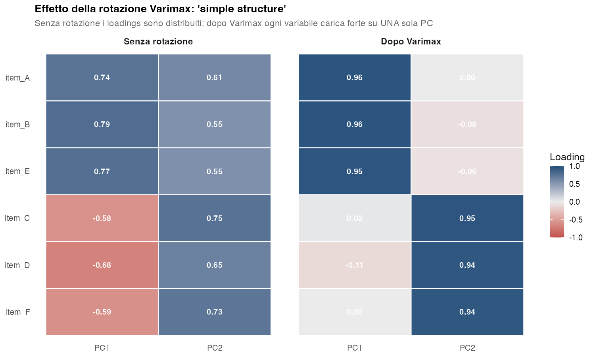
L’effetto della rotazione si vede ancora più chiaramente sul cerchio delle correlazioni. Negli stessi dati, prima e dopo Varimax:
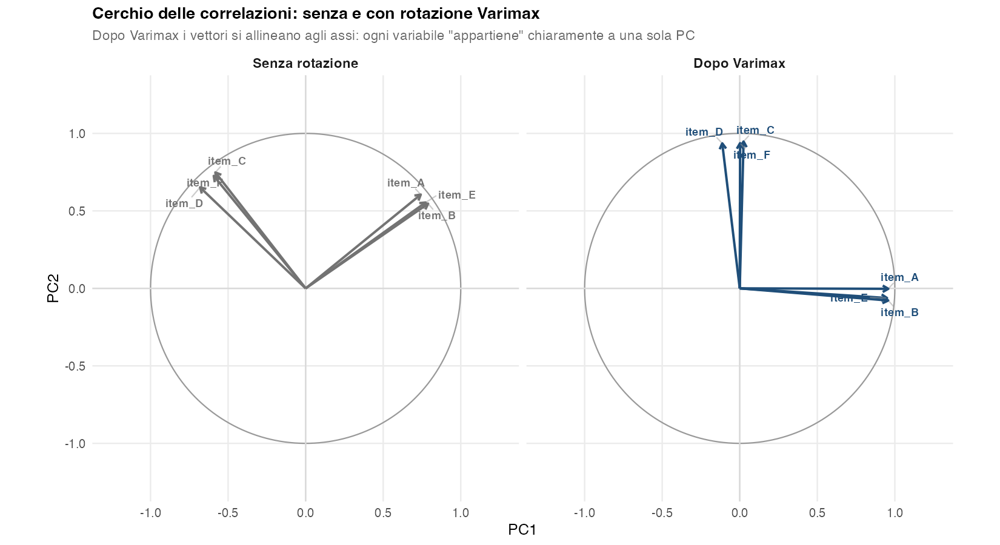
Visualmente, la rotazione è proprio un ruotare gli assi finché coincidono con i raggruppamenti naturali dei vettori. Le posizioni relative delle variabili fra loro non cambiano: la rotazione conserva lunghezze e angoli dei vettori nel sottospazio delle componenti ritenute, e quindi le correlazioni fra variabili che quel sottospazio rappresenta, che coincidono con quelle originali solo se non si trascurano componenti rilevanti. Cambia solo il sistema di riferimento rispetto a cui le interpretiamo, e questo rende gli assi PC1 e PC2 immediatamente nominabili.
Cambia però la varianza raccolta da ciascun asse. In questo esempio:
| Primo asse | Secondo asse | Totale | |
|---|---|---|---|
| Senza rotazione (autovalori) | 2,93 (48,8%) | 2,48 (41,4%) | 5,41 (90,2%) |
| Dopo Varimax | 2,75 (45,8%) | 2,66 (44,4%) | 5,41 (90,2%) |
Il totale non cambia: la rotazione non aggiunge né toglie informazione, la ridistribuisce fra i due assi, che dopo Varimax raccolgono ciascuno uno dei due gruppi di item. Qui lo spostamento è piccolo perché già prima della rotazione le due componenti raccoglievano quote simili; nell’esempio del questionario di soddisfazione, più avanti, è molto più marcato. Dopo la rotazione questi valori non si chiamano più autovalori: nel modulo sono la colonna SS loadings (§ P-23).
5.7.4 Varimax (ortogonale)
Massimizza la varianza dei loadings al quadrato in ciascuna componente:
\[ \text{Var}(\text{Varimax}) = \sum_k \left[\frac{1}{p}\sum_j \ell_{jk}^4 - \left(\frac{1}{p}\sum_j \ell_{jk}^2\right)^2\right] \to \max \]
vincolo: gli assi ruotati restano ortogonali fra loro.
Caratteristiche:
- Loadings tendono a essere vicini a 0 o grandi in valore assoluto (vicini a \(\pm 1\) con variabili standardizzate) dopo la rotazione (simple structure).
- Dopo la rotazione è più corretto parlare di componenti ruotate: descrivono lo stesso sottospazio generato dalle componenti principali selezionate, ma non sono più, singolarmente, le direzioni ordinate secondo il criterio di massima varianza della PCA. Si rinuncia all’interpretazione «principal component» del singolo asse in cambio di una struttura dei loadings più semplice da leggere.
- È la rotazione più usata in analisi di mercato e in psicometria.
5.7.5 Promax (obliqua)
Parte da Varimax e poi rilassa l’ortogonalità: le componenti ruotate possono diventare correlate. Quanto sono correlate si legge nella matrice \(\Phi\) (la lettera greca «fi»): una tabella con la correlazione fra ogni coppia di componenti ruotate, che nel modulo compare con il titolo Correlazioni fra le componenti ruotate (Φ) (§ P-23). Con due componenti si riduce a un solo numero fra −1 e 1. Un valore vicino a 0 vuol dire che le due dimensioni sono quasi indipendenti, come con Varimax, dove \(\Phi\) vale sempre 0; un valore positivo lontano da 0 vuol dire che sono legate: chi ha un punteggio alto sulla prima tende ad averlo alto anche sulla seconda. È utile quando le dimensioni interpretative individuate nel sottospazio PCA sono plausibilmente correlate e una soluzione obliqua produce una struttura dei loadings più semplice — situazione in cui Varimax, vincolato a tenere gli assi a 90°, non può raggiungere la simple structure.
5.7.5.1 L’effetto visivo
Immaginiamo un esempio classico delle ricerche di mercato: una survey di soddisfazione clienti con 6 item. Tre item misurano la qualità percepita (qualita, affidabile, innovativa), gli altri tre misurano la fedeltà (fedele, raccomando, riacquisto). I due costrutti sono concettualmente distinti ma correlati (chi percepisce alta qualità tende a essere più fedele, e viceversa).
La figura sotto mostra cosa succede:
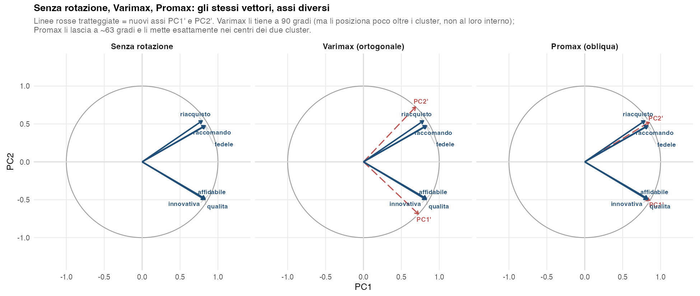
Lettura della figura:
- Senza rotazione (a sinistra): la PCA “ortogonale” mette PC1 sull’orizzontale (la bisettrice fra i due cluster — vedi nota sotto) e PC2 sulla verticale. I loadings di ogni variabile sono intermedi su entrambi gli assi (~0,83 su PC1, ~0,49 su PC2): nessuna delle due componenti è “pulita”.
- Varimax (al centro): l’algoritmo ruota gli assi (qui di circa −43°) per polarizzare i loadings. Ogni gruppo è ora dominato da una sola componente, ma gli assi PC1’ e PC2’ sono leggermente oltre i cluster: il vincolo di ortogonalità (~90° fra i due) li costringe a non essere esattamente al centro dei due gruppi. Risultato: simple structure approssimativa, con loadings tipo (0,94, 0,21). Cambia anche la varianza raccolta dai due assi. Prima della rotazione PC1 raccoglieva 4,05 (il 67,6% della variabilità totale) e PC2 1,47 (il 24,6%); dopo Varimax il primo asse ruotato ne raccoglie 2,83 (47,2%) e il secondo 2,70 (44,9%). Il totale resta 5,53, cioè il 92,1%: la rotazione non aggiunge né toglie informazione, la ridistribuisce fra i due assi, che ora pesano quasi allo stesso modo, uno per la qualità percepita e uno per la fedeltà.
- Promax (a destra): rilassa il vincolo. Gli assi PC1’ e PC2’ si spostano dentro i due cluster (uno a circa −31°, l’altro a circa +32°), ciascuno esattamente al centro di un gruppo. Simple structure perfetta: loadings tipo (0,97, 0,00). I due assi sono a circa 63° fra loro, perché le due dimensioni latenti sono naturalmente correlate (nella simulazione la loro correlazione è 0,55; fra le componenti Promax \(\Phi \approx 0{,}46\)).
Varimax sceglie la rotazione ortogonale che massimizza la varianza dei loadings al quadrato — cioè quanto i loadings² si distribuiscono fra valori vicini a 1 e valori vicini a 0 (simple structure). Per capire perché si ferma poco oltre i cluster, due passaggi.
Passo 1 — Senza rotazione, PC1 cade sulla bisettrice. PC1 è la direzione che massimizza la varianza dei dati proiettati. Con variabili standardizzate, come qui, quando i due cluster sono simmetrici questa direzione è la bisettrice del loro angolo — la “media” delle direzioni dei due cluster. Senza standardizzazione PC1 si sposta verso il gruppo di variabili con varianza più grande.
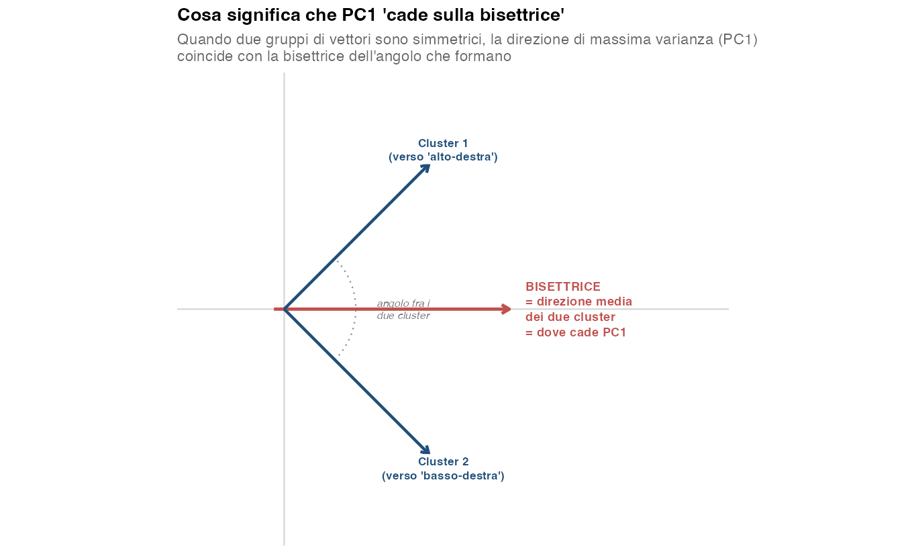
Senza rotazione i vettori cadono “a metà strada” fra PC1 e PC2: loadings intermedi su entrambe le componenti, simple structure assente.
Passo 2 — Varimax ruota, ma non porta gli assi dentro i cluster. Se Varimax ruotasse PC1’ esattamente dentro il cluster 1, il loading del cluster 1 su PC1’ sarebbe ~1 (perfetto), ma il loading del cluster 2 su PC1’ sarebbe ancora intermedio (cos(62°) ≈ 0,47) — perché PC2’ sarebbe perpendicolare al cluster 1, non dentro il cluster 2.
Spingendo invece la rotazione un po’ oltre il cluster 1 (qui di circa 13° in più), si paga una piccola perdita sul cluster 1 (loading scende da 1,00 a circa 0,98) ma si guadagna molto sul cluster 2: il suo loading su PC1’ scende molto più rapidamente (da circa 0,47 a circa 0,26). Globalmente i loadings² diventano più polarizzati → Varimax preferisce questa posizione.
In altre parole, Varimax fa un compromesso ottimale fra i due cluster, ma simmetrico: gli assi si posizionano poco oltre entrambi i cluster, mai esattamente dentro nessuno. È la migliore simple structure raggiungibile rimanendo a 90°.
Conclusione: perché serve Promax. Promax non ha questo vincolo. Può posizionare PC1’ esattamente al centro del cluster 1 e PC2’ esattamente al centro del cluster 2, anche se l’angolo fra i due assi diventa < 90°. Il guadagno in interpretabilità (loadings 0,97 con residui ~0) si paga con l’introduzione di correlazione fra le componenti (qui \(\Phi \approx 0{,}46\), che in questo esempio è circa il coseno dei 63° fra i due assi: in generale però l’angolo disegnato non determina \(\Phi\), che dipende anche dalla convenzione con cui si costruiscono i punteggi), che va riportata e interpretata insieme ai loadings.
Quando si guarda un cerchio delle correlazioni con assi obliqui (come Promax), c’è una sottigliezza facile da dimenticare. Il nostro occhio, abituato agli assi ortogonali, legge automaticamente i loadings con proiezioni perpendicolari dal vettore all’asse. Con assi obliqui questa convenzione non funziona più: dà un valore numerico diverso dal pattern loading effettivamente prodotto dall’algoritmo.
La regola corretta è: con assi obliqui, il loading di un vettore su PC1’ si legge tracciando una linea parallela a PC2’ (non perpendicolare a PC1’) fino a incontrare PC1’. E viceversa per PC2’.
Per chiarire, ecco un esempio completamente schematico (svincolato dai dati di Promax): immaginiamo due assi obliqui PC1’ e PC2’ a 60° fra loro, e un vettore \(X\) costruito ad arte con pattern loadings veri \(X = 0{,}80 \cdot \text{PC1}' + 0{,}20 \cdot \text{PC2}'\). Vediamo cosa producono le due letture sull’asse PC2’:
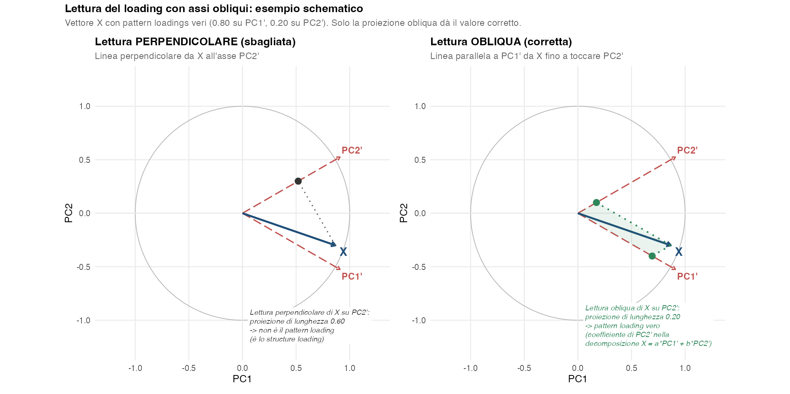
Cosa cambia fra le due letture.
- Lettura perpendicolare: misura la coordinata che si ottiene proiettando ortogonalmente il vettore sull’asse (nell’esempio \(0{,}8 \cos 60° + 0{,}2 = 0{,}60\)). È quello che il nostro occhio “vede” istintivamente. Sugli assi ortogonali dà la correlazione fra variabile e componente, cioè, con variabili standardizzate, il loading; sugli assi obliqui non dà il pattern loading ma lo structure loading, cioè la correlazione fra variabile e componente.
- Lettura obliqua: misura il coefficiente della decomposizione \(X = a \cdot \text{PC1}' + b \cdot \text{PC2}'\). È l’unico modo geometrico per “leggere” i pattern loadings dal cerchio. Si ottiene chiudendo il parallelogramma fra il vettore e l’origine usando i due assi come lati.
Il parallelogramma è la chiave. Per estrarre il pattern loading di \(X\) su PC2’:
- Si parte dalla punta del vettore \(X\).
- Si traccia una linea parallela a PC1’ (non a PC2’!) fino a toccare PC2’.
- La distanza fra l’origine e il punto d’incontro è il pattern loading di \(X\) su PC2’.
Si fa simmetricamente per leggere il loading su PC1’ (linea parallela a PC2’). Le due linee — insieme ai due assi — chiudono il parallelogramma verde nella figura.
Distinzione fra pattern e structure loadings. Con variabili standardizzate i due coincidono quando le componenti sono ortogonali, e si separano con le rotazioni oblique:
- Pattern loadings (\(p_{jk}\)): coefficienti della decomposizione \(X_j = p_{j1}\,\text{PC1}' + p_{j2}\,\text{PC2}' + \varepsilon\). Si leggono con proiezioni oblique. Misurano il contributo unico della componente, al netto delle altre.
- Structure loadings: correlazioni semplici \(\text{corr}(X_j, \text{PC}_k)\). Si leggono con proiezioni perpendicolari, e restano in \([-1, 1]\).
In pratica, non si tenta di leggere i loadings dal cerchio quando si è ruotato con Promax: la grafica con assi obliqui è utile per vedere la posizione delle variabili, ma i numeri vanno letti dalle tabelle prodotte dal software. In AnalisiMercato la tabella Coordinate delle variabili (loadings) — ruotati (Promax) contiene i pattern loadings e la tabella Correlazioni fra le componenti ruotate (Φ) le correlazioni fra le componenti. Le correlazioni variabile–componente (structure) non hanno una tabella propria: sono le coordinate disegnate nel cerchio, e i loro quadrati sono nella tabella dei cos².
5.7.5.2 Cosa cambia operativamente
Quando si usa Promax, per interpretare correttamente la soluzione servono tre elementi:
| Output Promax | Significato |
|---|---|
| Pattern loadings | Coefficienti della rappresentazione della variabile sulle componenti oblique, \(X = P \cdot F\): sono l’analogo di un coefficiente parziale nel sistema obliquo, cioè il peso di una componente al netto delle altre. Tipicamente molto polarizzati (vicini a 0 o, con variabili standardizzate, a \(\pm 1\)). Non sono correlazioni: possono superare 1 in valore assoluto. |
| Structure loadings | Correlazioni \(\text{corr}(X_j, F_k)\) fra variabili e componenti ruotate (la notazione \(F_k\) viene dalla letteratura di factor analysis). Non coincidono con i pattern loadings quando le componenti sono correlate. |
| Matrice \(\Phi\) | Correlazioni fra le componenti ruotate. Da riportare e interpretare nel report. |
Se le correlazioni fuori diagonale di \(\Phi\) sono molto piccole, una soluzione ortogonale è spesso sufficiente e più semplice da interpretare e comunicare. Se sono più marcate e la soluzione obliqua produce una struttura dei loadings sensibilmente più chiara, Promax rappresenta meglio le relazioni presenti nel sottospazio analizzato.
Valori come 0,20, 0,30 o 0,40 si possono usare come riferimenti euristici, non come soglie decisionali universali. La scelta considera insieme la matrice \(\Phi\), la semplicità della struttura dei loadings, la plausibilità sostantiva della correlazione fra le dimensioni e l’obiettivo dell’analisi.
In ogni caso la matrice \(\Phi\) va riportata nel report: omettere la correlazione fra componenti dopo una rotazione obliqua nasconde un’informazione cruciale.
Caratteristiche operative:
- Loadings tipicamente ancora più “polarizzati” rispetto a Varimax.
- Aggiunge una matrice di correlazione fra componenti ruotate (\(\Phi\)) che va riportata e interpretata.
- Da preferire quando è plausibile che le dimensioni interpretative siano correlate (es. “qualità percepita” e “fedeltà alla marca” sono concettualmente collegate).
5.7.6 Componenti ortogonali vs oblique: cosa cambia interpretativamente
Al di là dei dettagli tecnici, la scelta fra componenti ortogonali (nessuna rotazione o Varimax) e componenti oblique (Promax) ha conseguenze sostanziali per come si leggono e si comunicano i risultati. Vale la pena fissarle.
5.7.6.1 Cosa significa “ortogonali” e “oblique”
| Componenti ortogonali | Componenti oblique | |
|---|---|---|
| Vincolo geometrico | Assi a 90° fra loro | Assi a un angolo qualsiasi |
| Componenti ruotate standardizzate (\(\Phi\)) | Incorrelate: \(\Phi\) è la matrice identità | Correlate: la matrice \(\Phi\) va riportata |
| Coordinate delle osservazioni (proiezioni sugli assi) | Incorrelate senza rotazione; dopo Varimax in generale correlate | Correlate |
Il «punteggio» di un individuo su una componente (PC score) è la sua proiezione sul nuovo asse. Senza rotazione i punteggi hanno correlazione lineare nulla per costruzione: un valore alto su PC1 non implica alcuna tendenza lineare verso valori alti o bassi su PC2 — il che, si badi, non equivale in generale a indipendenza statistica. Dopo una rotazione, anche ortogonale, questo non vale più per le proiezioni. Il motivo si vede guardando la nuvola dei punteggi: senza rotazione è allungata lungo PC1 e stretta lungo PC2, e gli assi ruotati la tagliano in diagonale, così i punteggi su di essi tendono a crescere o a calare insieme. Le componenti ruotate standardizzate, a cui si riferiscono i loadings ruotati, partono invece da una nuvola resa rotonda, con varianza 1 su ogni componente: ruotata, resta rotonda, e con Varimax le componenti restano incorrelate. Con Promax, che rende gli assi obliqui, sono correlate anche queste, secondo la matrice \(\Phi\).
5.7.6.2 Implicazioni sull’interpretazione dei loadings
Quando le componenti sono ortogonali, i loadings hanno un solo significato:
\(\ell_{jk}\) = correlazione fra la variabile \(X_j\) e la componente \(\text{PC}_k\) (con Varimax, la componente ruotata standardizzata), se le variabili sono standardizzate; senza standardizzazione è questa correlazione moltiplicata per la deviazione standard \(\sigma_j\) della variabile.
Quando le componenti sono oblique, i loadings si sdoppiano:
| Tipo | Cosa è | Quando usarlo |
|---|---|---|
| Pattern loading | Coefficiente di \(\text{PC}_k\) nella combinazione lineare che ricostruisce \(X_j\): \(X_j = \sum_k p_{jk}\,\text{PC}_k + \varepsilon\). È un coefficiente parziale: il peso di quella componente al netto delle altre, non una correlazione. | Per nominare la componente: “questa variabile contribuisce a questa componente al di là di ciò che già spiega l’altra” |
| Structure loading | Correlazione semplice \(\text{corr}(X_j, \text{PC}_k)\). Include anche la correlazione indiretta che la variabile ha con la componente via l’altra componente. | Per il cerchio delle correlazioni: rappresenta la posizione “geometrica” della variabile rispetto agli assi obliqui |
Nel caso ortogonale, con variabili standardizzate, pattern loading = structure loading (coincidono; senza standardizzazione il pattern loading è lo structure loading moltiplicato per \(\sigma_j\)). Nel caso obliquo, divergono, e la differenza diventa più marcata al crescere di \(\Phi\).
5.7.6.3 Implicazioni concettuali
Dimensioni incorrelate o correlate?
L’ortogonalità impone che le componenti standardizzate siano linearmente incorrelate; le proiezioni delle osservazioni sugli assi ruotati, come visto, possono non esserlo. Non implica comunque che i costrutti interpretativi siano concettualmente indipendenti, né che i punteggi siano statisticamente indipendenti in senso generale. È comunque un vincolo forte: nella realtà molti costrutti misurati con i questionari sono naturalmente correlati.
- Esempi di dimensioni che è realistico assumere ortogonali: estroversione e altezza, anzianità di abbonamento e propensione al digitale (variabili di natura diversa).
- Esempi di dimensioni naturalmente correlate: qualità percepita e fedeltà, soddisfazione e probabilità di raccomandare, prezzo accettabile e livello di servizio atteso.
Se una soluzione obliqua evidenzia correlazioni sostanziali fra le componenti ruotate, imporre un’interpretazione completamente ortogonale dà una rappresentazione meno aderente alla struttura correlazionale osservata. La scelta fra Varimax e Promax è quindi un compromesso fra semplicità interpretativa e possibilità di rappresentare le correlazioni fra gli assi.
Comunicabilità dei risultati.
| Ortogonale | Obliqua | |
|---|---|---|
| Frase tipica | “Il fenomeno si articola in \(q\) dimensioni distinte, su assi ortogonali.” | “Il fenomeno ha \(q\) dimensioni distinte ma collegate fra loro (correlazione \(\Phi\)).” |
| Numero di tabelle | Una sola matrice dei loadings | Pattern + Structure + matrice \(\Phi\) |
| Pubblico non tecnico | Più facile da spiegare a non-statistici | Richiede un’introduzione al concetto di correlazione fra componenti |
In contesti professionali una soluzione ortogonale è spesso più semplice da comunicare; in contesti scientifici una soluzione obliqua è preferibile quando le correlazioni fra componenti sono sostanziali e metodologicamente rilevanti. La scelta però non dipende dal pubblico, ma dalla struttura dei dati e dall’obiettivo dell’analisi.
5.7.6.4 Implicazioni sull’uso successivo dei PC score
Una volta scelta la rotazione, i punteggi sulle componenti ruotate possono essere salvati come nuove variabili e usati in analisi successive. Qui le due scelte hanno effetti operativi diversi:
| Uso successivo | Ortogonale | Obliqua |
|---|---|---|
| Cluster analysis sui PC score | Una rotazione ortogonale pura conserva le distanze euclidee: a parità di componenti ritenute, il clustering sulle coordinate ruotate dà gli stessi gruppi che su quelle non ruotate (è il caso delle coordinate Varimax salvate dal modulo). Non vale se i punteggi vengono anche riscalati, come le componenti ruotate standardizzate, che possono portare a una partizione diversa. La rotazione aiuta a leggere i gruppi, non a trovarli | Assi correlati: se i punteggi entrano in una distanza euclidea, la struttura di correlazione va considerata esplicitamente (per esempio con una distanza di Mahalanobis o un’altra rappresentazione) |
| Regressione con PC come predittori | Senza rotazione, niente multicollinearità (per costruzione); le coordinate Varimax possono invece essere correlate | Multicollinearità fra predittori (va gestita) |
| Indicatori sintetici (es. indice di soddisfazione) | Ogni indicatore ha un significato netto; la correlazione fra indicatori costruiti sulle coordinate ruotate va comunque controllata | Più realistico ma più complesso da comunicare |
| Mappa di posizionamento | Assi a 90°: la lettura “quadrante per quadrante” è netta | Assi obliqui: la lettura per quadranti perde di rigore |
5.7.6.5 Regola pratica
Una buona euristica per scegliere:
Se le dimensioni sono concettualmente distinte e si cerca soprattutto una lettura semplice degli assi → Varimax. Se invece servono punteggi incorrelati, per esempio come predittori in una regressione, conviene partire dalle componenti non ruotate.
Se le dimensioni sono plausibilmente correlate (qualità ↔︎ fedeltà, soddisfazione ↔︎ raccomandazione) e la matrice \(\Phi\) mostra correlazioni non trascurabili → Promax.
In caso di dubbio: provare entrambe e confrontare, guardando \(\Phi\) e la leggibilità dei loadings.
I valori 0,20, 0,30 e 0,40 che si incontrano spesso in letteratura si possono usare nel corso come riferimenti euristici — sotto 0,20 Varimax è di solito preferibile per parsimonia, sopra 0,40 l’ortogonalità sta probabilmente forzando la struttura — ma non sono soglie universali, e nessuna delle due rotazioni diventa «corretta» o «sbagliata» al superamento di un numero. La scelta considera insieme la plausibilità sostantiva della correlazione, l’entità delle correlazioni in \(\Phi\), la semplicità della struttura dei loadings e l’obiettivo delle analisi successive.
5.7.7 Quale scegliere
| Situazione | Rotazione |
|---|---|
| Esplorazione descrittiva, componenti già interpretabili | Nessuna |
| Struttura dei loadings più semplice da leggere, mantenendo assi ortogonali | Varimax |
| Punteggi incorrelati da salvare e usare in analisi successive | Nessuna: le coordinate ruotate che il modulo salva sono in generale correlate anche con Varimax |
| Dimensioni interpretative che plausibilmente possono essere correlate | Promax, verificando la matrice \(\Phi\) e la leggibilità della soluzione |
5.7.8 Effetto della rotazione sulla varianza
Con una rotazione ortogonale come Varimax il sottospazio generato dalle componenti ritenute resta lo stesso: la varianza complessivamente rappresentata da quel sottospazio non cambia, viene solo redistribuita fra gli assi ruotati.
Con una rotazione obliqua come Promax gli assi ruotati sono correlati, quindi la varianza associata ai singoli assi non si interpreta né si somma come per componenti ortogonali: le quote si sovrappongono.
Per esempio, nel questionario di soddisfazione PC1 e PC2 spiegano il 67,6% e il 24,6% della varianza: la quantità \(67{,}6\% + 24{,}6\% \approx 92{,}1\%\) descrive la quota di varianza rappresentata dal sottospazio delle due componenti principali ritenute. Con Varimax la stessa quota si divide in 47,2% e 44,9%; con Promax non va riletta come somma di due percentuali indipendenti attribuite agli assi.
| Soluzione | Interpretazione |
|---|---|
| PCA non ruotata | PC1 = 67,6%, PC2 = 24,6%; sottospazio = 92,1% |
| Varimax | varianza redistribuita fra due assi ortogonali: 47,2% e 44,9%; sottospazio = 92,1% |
| Promax | assi correlati: evitare di attribuire percentuali additive ai singoli assi; il sottospazio PCA di partenza resta al 92,1% |
- Se si tiene una sola componente: la rotazione su una PC è identità.
- Se la simple structure non è raggiungibile (es. variabili a struttura complessa che caricano su più PC): la rotazione può confondere invece di chiarire.
5.8 Variabili supplementari
Si possono proiettare ex-post nello spazio delle componenti variabili che non contribuiscono al loro calcolo, per arricchire l’interpretazione.
5.8.1 Variabili quantitative supplementari
Si calcola la correlazione fra la variabile supplementare e ciascuna PC e si disegna il vettore corrispondente nel cerchio delle correlazioni. Utile per:
- Validare le componenti con variabili esterne (es. risultati di vendita, market share).
- Esplorare se una variabile “esterna” si allinea a una direzione interpretabile dello spazio delle componenti.
5.8.2 Variabili qualitative supplementari
Per ogni modalità \(g\) della variabile qualitativa, si calcola il baricentro delle osservazioni che hanno quella modalità:
\[ \bar c_g = \frac{1}{n_g} \sum_{i: g_i = g} z_i \]
dove \(z_i\) è la posizione dell’individuo \(i\) nel piano principale. Il baricentro viene proiettato nella mappa, etichettato col nome della modalità.
Le variabili qualitative supplementari sono lo strumento fondamentale per le mappe di posizionamento: permettono di leggere la posizione media di gruppi di osservazioni (es. segmenti, marche, fasce d’età) rispetto alle dimensioni sintetiche della PCA.
5.9 La mappa di posizionamento
La mappa di posizionamento (o perceptual map) è uno degli strumenti più caratteristici della PCA applicata alle ricerche di mercato. Combina in un unico piano \((\text{PC}_x, \text{PC}_y)\):
- le osservazioni (marche, prodotti, segmenti, baricentri di gruppi);
- i vettori delle variabili attive (gli attributi su cui sono state valutate);
- i baricentri delle variabili qualitative supplementari (categorie pre-esistenti come “tipo di posizionamento”, “fascia di prezzo”, “area geografica”).
Il risultato è una “fotografia” del mercato che il manager può leggere a colpo d’occhio.
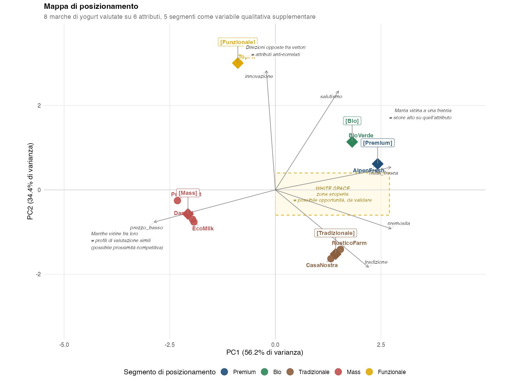
panel_prodotti.csv usati nei capitoli applicativi.
5.9.1 Come si legge
La lettura della mappa si articola su tre livelli, da combinare insieme.
5.9.1.1 1. Nominare gli assi
Prima si dà un nome interpretabile a PC1 e PC2, guardando le frecce degli attributi. Nella mappa qui sopra:
- PC1: a sinistra cade
prezzo_basso, a destrafrutta_fresca,cremosita,salutismo. PC1 è quindi una dimensione di qualità percepita / orientamento premium (sinistra = economico/basico, destra = premium/ricco). - PC2: in alto cadono
innovazioneesalutismo, in bassotradizione. PC2 è una dimensione tradizione vs innovazione.
5.9.1.2 2. Leggere il posizionamento delle marche
Una volta nominati gli assi, ogni marca si interpreta in base al suo quadrante:
- AlpenFresh / BioVerde (alto-destra): premium con orientamento bio/innovativo.
- TopFit (alto-sinistra): funzionale/innovativo ma con prezzo accessibile.
- CasaNostra, RusticoFarm (basso-destra): premium tradizionale (cremosità, tradizione).
- DanLat, EcoMilk, PromoMart (basso-sinistra): mass-market, prezzo basso, niente specializzazione.
5.9.1.3 3. Leggere le relazioni fra elementi
| Cosa osservare | Significato strategico |
|---|---|
| Marche vicine fra loro | Profili simili rispetto agli attributi rappresentati: possono suggerire prossimità competitiva, se quegli attributi descrivono davvero lo spazio competitivo |
| Marche distanti | Profili differenti rispetto agli attributi rappresentati nel piano; la distanza non dimostra da sola che operino su pubblici o mercati diversi |
| Marca con proiezione alta nella direzione di un vettore | Valore relativamente alto su quell’attributo, nell’approssimazione del piano: conta la proiezione del punto sulla direzione della freccia, non la distanza dalla sua punta (es. BioVerde ↔︎ frutta_fresca, salutismo) |
| Vettori in direzioni opposte | Attributi anti-correlati nel campione (es. prezzo_basso ↔︎ frutta_fresca) |
| Vettori ortogonali | Attributi con correlazione lineare prossima a zero nel piano — un brand può puntare a entrambi senza compromessi apparenti |
| Baricentro di un segmento | Posizione “media” di quel gruppo nello spazio percettivo |
5.9.2 Variante “solo baricentri”
Quando le osservazioni sono molte e le coordinate individuali sono poco interessanti, una mappa basata solo sui baricentri delle variabili qualitative supplementari diventa più leggibile e direttamente utilizzabile. Si rinuncia al dettaglio individuale per guadagnare in sinteticità e nella possibilità di incrociare più variabili categoriali nello stesso piano.
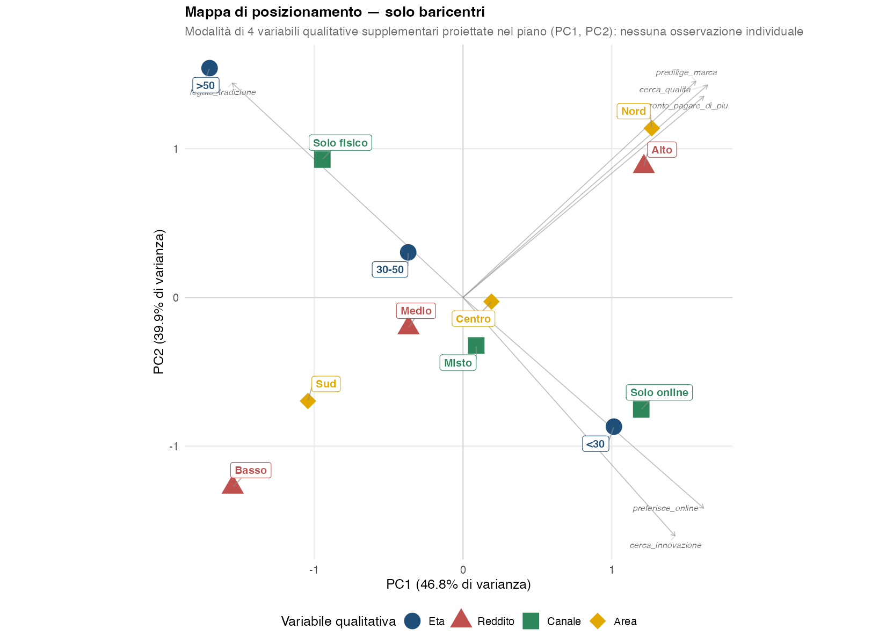
Eta, Reddito, Canale di acquisto, Area geografica) come baricentri colorati per variabile. Le frecce grigie sullo sfondo sono i vettori delle attive, mantenute per dare significato agli assi.
Questa rappresentazione mostra che alcuni baricentri di modalità appartenenti a variabili diverse occupano regioni simili del piano:
- nel quadrante alto-destra,
NordeReddito Alto; - nel quadrante alto-sinistra,
Eta >50eCanale Solo fisico; - nel quadrante basso-destra,
Eta <30eCanale Solo online, in direzione delle freccecerca_innovazioneepreferisce_online; - nel quadrante basso-sinistra,
SudeReddito Basso.
La vicinanza indica che i gruppi definiti da quelle modalità hanno profili medi simili rispetto alle variabili attive rappresentate nel piano. Non dimostra che le due modalità tendano a verificarsi negli stessi individui: per studiare l’associazione fra due variabili qualitative bisogna analizzarle congiuntamente, per esempio con una tabella di contingenza.
Due baricentri vicini appartenenti a variabili qualitative diverse indicano che i due sottogruppi hanno profili medi simili sulle variabili attive rappresentate nel piano. Non dimostrano che le due modalità compaiano negli stessi individui.
Esempio: se Eta >50 e Canale Solo fisico occupano posizioni vicine nel quadrante alto-sinistra, significa che gli individui dei due gruppi mostrano mediamente profili simili rispetto alle dimensioni rappresentate. Per sapere se avere più di 50 anni sia effettivamente associato all’uso del canale fisico bisogna guardare le due variabili insieme, per esempio con una tabella di contingenza.
La direzione che separa due baricentri mostra lungo quali combinazioni delle componenti i profili medi dei due gruppi differiscono di più nel piano rappresentato: non è, da sola, una misura di covariazione fra le due modalità.
⚠️ Le distanze fra baricentri di modalità della stessa variabile (es. <30, 30-50, >50) descrivono quanto le tre fasce d’età si differenziano nello spazio degli atteggiamenti. Baricentri lontani indicano profili medi diversi nel piano; per dire quanto la variabile discrimini davvero servono anche la dispersione interna ai gruppi e la loro numerosità, che la mappa non mostra.
5.9.3 A cosa serve: tre usi strategici
Se la PCA è costruita su attributi rilevanti per la percezione competitiva, marche vicine nel piano hanno profili simili sugli attributi rappresentati, e la vicinanza può quindi suggerire una maggiore prossimità competitiva. Da sola, però, non dimostra che due marche siano competitor diretti in senso commerciale: la concorrenza effettiva dipende anche da mercato, target, prezzo, distribuzione e comportamento di scelta.
Esempio: nella mappa, DanLat e PromoMart sono vicine nello spazio percettivo degli attributi considerati, mentre AlpenFresh se ne discosta. È un’indicazione da verificare con i dati di mercato, non un fatto competitivo accertato.
Le zone vuote della mappa segnalano combinazioni di attributi che nessun competitor presidia nel campione osservato. Una zona vuota non è però automaticamente un’opportunità: può semplicemente corrispondere a una combinazione poco osservata o poco rappresentata nei dati.
Esempio: il riquadro giallo della mappa segnala uno white space fra Premium/Bio (alto-destra) e Tradizionale (basso-destra): un posizionamento premium “classico”, centrato su cremosità e frutta fresca, senza accenti marcati né sull’innovazione né sulla tradizione, che potrebbe interessare consumatori che cercano qualità senza essere attratti né dalla novità né dal richiamo alla tradizione.
⚠️ Attenzione: chiamarlo white space economicamente interessante richiede una validazione della domanda. Va verificato che per quel posizionamento ci sia domanda effettiva e che la zona non sia vuota perché economicamente non sostenibile.
Quando una marca decide di spostarsi nello spazio percettivo (es. da Mass a Premium), la mappa indica:
- la direzione del cambiamento (su quali attributi puntare);
- la distanza nella mappa, che quantifica la differenza fra posizioni nello spazio statistico degli attributi rappresentati: aiuta a capire quali dimensioni dovrebbero cambiare, ma non misura costo, sforzo o entità operativa del repositioning;
- i nuovi concorrenti che si troveranno nel nuovo quadrante.
La mappa va riprodotta a distanza di tempo (es. annualmente) per misurare se il repositioning sta avvenendo davvero.
5.9.4 Limiti della mappa di posizionamento
- Riduzione 2D: la mappa mostra solo PC1+PC2. Marche con cos² basso nel piano (vedi il pannello di destra di Figura 5.5) sono “mal proiettate” — la loro posizione apparente non è informativa. Sempre verificare i cos² prima di commentare la posizione di una marca al margine.
- Snapshot, non film: descrive com’è il mercato ora, non come si è arrivati a questa configurazione né come cambierà.
- Sensibilità alla selezione di attributi: cambiando le variabili attive, gli assi cambiano e la mappa va riletta. Per questo motivo la selezione di attributi è un momento metodologicamente delicato.
- Percezione vs realtà: la mappa rappresenta la percezione del consumatore (se i dati vengono da una survey), non gli attributi oggettivi del prodotto. Un disallineamento percezione/realtà è di per sé un’informazione utile.
5.10 La PCA nelle ricerche di mercato
In analisi di mercato la PCA ha tre usi tipici, spesso combinati:
- Mappa di posizionamento — ridurre dimensioni di valutazione di prodotti/marche a un piano 2D leggibile dal manager. Le marche diventano punti, gli attributi vettori; segmenti o categorie supplementari diventano baricentri.
- Costruzione di indicatori sintetici — combinare più item correlati in un singolo score (es. “indice di soddisfazione” a partire da 10 item Likert). Si usano i punteggi delle componenti originali; anche le coordinate ottenute dopo una rotazione possono servire come nuove variabili, ma in quel caso si parla di punteggi sulle componenti ruotate, non di nuove componenti principali.
- Pre-processing per clustering — le prime \(q\) componenti diventano la base di segmentazione. Ridurre la dimensionalità può eliminare parte della ridondanza lineare, attenuare il rumore, semplificare l’interpretazione e abbassare il costo di calcolo. Tenere solo \(q\) componenti, però, cambia lo spazio delle distanze e può buttare via componenti a bassa varianza che distinguevano bene i gruppi: è una scelta metodologica da motivare, non un miglioramento automatico del clustering.